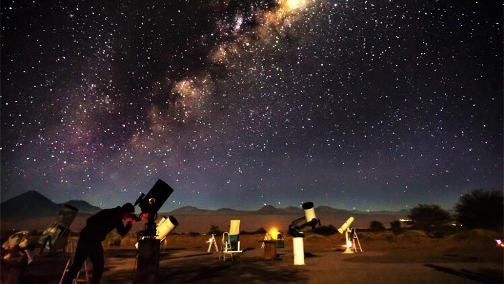

Sobre mim
Nome: Sophia de Lima Castro
Turma: 2ºF
O lugar dos meus sonhos
Nome do lugar: Deserto do atacama
Por que quero conhecer esse lugar?
Essa com certeza é uma das destinações que eu mais me interesso, provavelmente no topo dos lugares que pretendo visitar. Mas pretendo ir especificamente a noite, onde o céu é considero um dos mais bonitos durante o período noturno, já que não tem muita poluição luminosa.

Curiosidades sobre esse lugar
- O Atacama abriga alguns dos telescópios mais avançados do planeta, como o do European Southern Observatory.
- A região é tão seca que algumas áreas passam anos sem chuva, o que ajuda a manter o céu limpo para observação astronômica.
- Muitos cientistas testam equipamentos espaciais ali porque o ambiente lembra o de Marte.